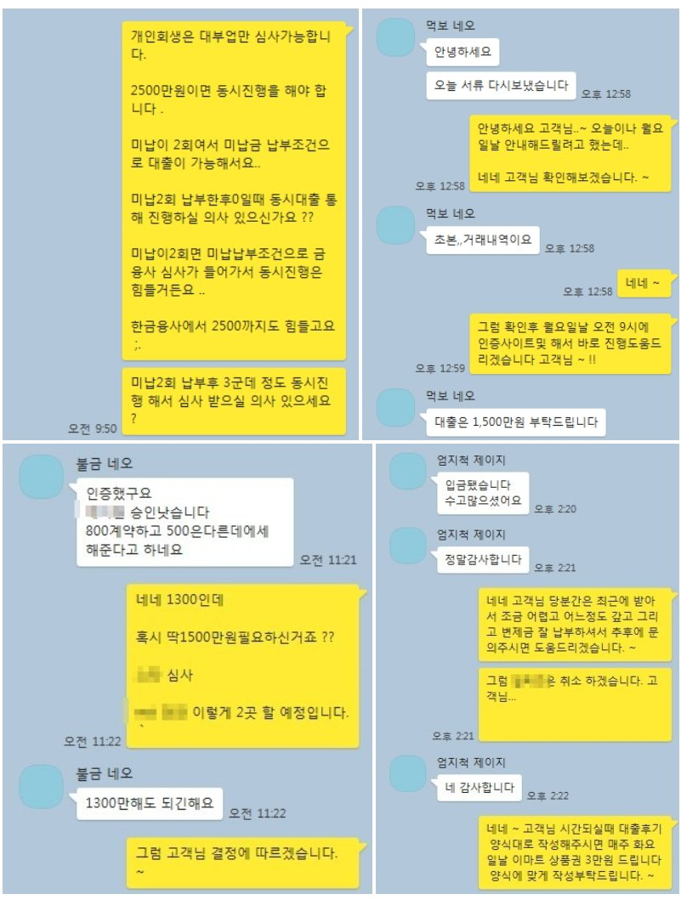

사업자 개인회생 1300만원 대출 사례!
안녕하세요 뱅크앤론 가족여러분.. ~ ^^ 김한수 상담사입니다. 오늘은 직장인조건이 아닌 사업자조건으로 개인회생 대출 사례를 안내해 드리겠습니다.
고객님 경우 서비스 업종 9년정도 운영하신 고객님입니다. 저랑 처음 상담했을때 고객님 조건은 변제금 83만원 36회차 17회 미납2회 이렇게 변제금 회차가 확인됐었습니다.
고객님께서는 처음 저랑 상담했을때 필요자금이 2500만원 필요했습니다. 상담통해 개인회생 경우는 한도가 많이 나올려면 미납이 0인상태에서 진행을 해야 가능하다고 판단하에 고객님께 미납2회를 납부한후 1주일뒤에 도움드렸습니다.
금융사 각 시간에 맞춰서 진행한 결과
4군데에서 A금융사 800 만원 B금융사 500만원 C금융사 900만원 D금융사 1000만원
이렇게 3200만원 동시에 진행했습니다. 진행하면서 고객님께서는 채무를 고려하여.. 1300만원 필요하다는 판단하에
A금융사 B금융사 2곳 통해서 도움드렸습니다. ~ ^^
아래는 저와 고객님 카톡 대화내용입니다. 개인회생분들중 자금이 많이 필요하신 직장인 또는 사업자분들이 있습니다.
그럴 경우 동시진행으로 해서 저희 뱅크앤론 상담사 분들이 도움드리겠습니다. ^^
아래 채널 링크통해 문의주시면 도움드리겠습니다. 이번한주도 화이팅하고 대출 궁금한점 있으면 문의남겨주세요 ..감사합니다.
